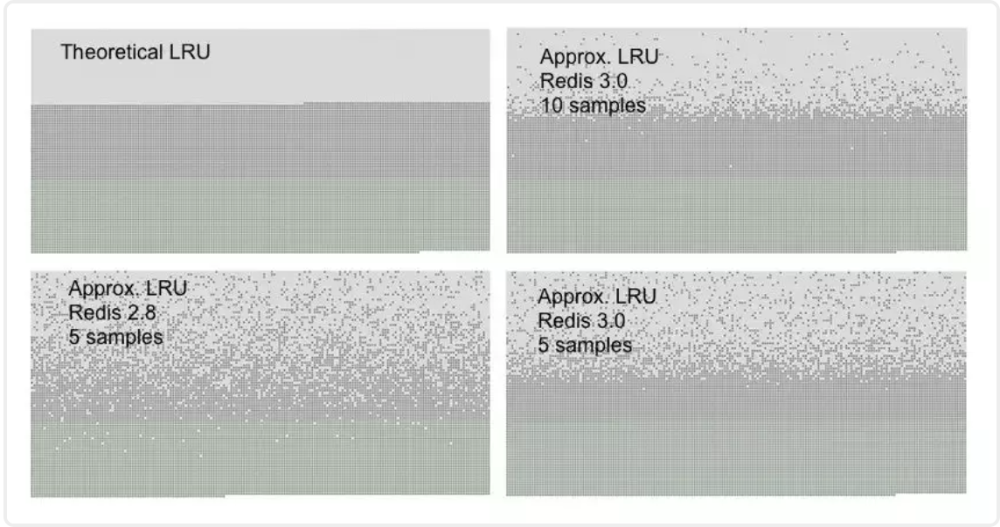

Redis占用内存大小
通过配置文件配置
通过在Redis安装目录下面的redis.conf配置文件中添加以下配置设置内存大小
1 | //设置Redis最大占用内存大小为100M |
redis的配置文件不一定使用的是安装目录下面的redis.conf文件，启动redis服务的时候是可以传一个参数指定redis的配置文件的
通过命令修改
Redis支持运行时通过命令动态修改内存大小
1 | //设置Redis最大占用内存大小为100M |
如果不设置最大内存大小或者设置最大内存大小为0，在64位操作系统下不限制内存大小，在32位操作系统下最多使用3GB内存
Redis的内存淘汰
内存用完的时候，Redis定义了几种策略用来处理继续往里添加数据的情况：
六种策略
- noeviction(默认策略)：对于写请求不再提供服务，直接返回错误（DEL请求和部分特殊请求除外）
- allkeys-lru：从所有key中使用LRU算法进行淘汰
- volatile-lru：从设置了过期时间的key中使用LRU算法进行淘汰
- allkeys-random：从所有key中随机淘汰数据
- volatile-random：从设置了过期时间的key中随机淘汰
- volatile-ttl：在设置了过期时间的key中，根据key的过期时间进行淘汰，越早过期的越优先被淘汰
当使用volatile-lru、volatile-random、volatile-ttl这三种策略时，如果没有key可以被淘汰，则和noeviction一样返回错误。
获取及设置内存淘汰策略
1 | 获取当前内存淘汰策略： |
LRU算法
LRU(Least Recently Used)，即最近最少使用，是一种缓存置换算法。在使用内存作为缓存的时候，缓存的大小一般是固定的。当缓存被占满，这个时候继续往缓存里面添加数据，就需要淘汰一部分老的数据，释放内存空间用来存储新的数据。这个时候就可以使用LRU算法了。其核心思想是：如果一个数据在最近一段时间没有被用到，那么将来被使用到的可能性也很小，所以就可以被淘汰掉。
使用java实现一个简单的LRU算法
1 | public class LRUCache<k, v> { |
LRU在Redis中的实现
近似LRU算法
Redis使用的是近似LRU算法，它跟常规的LRU算法还不太一样。近似LRU算法通过随机采样法淘汰数据，每次随机出5（默认）个key，从里面淘汰掉最近最少使用的key。
可以通过maxmemory-samples参数修改采样数量：例：maxmemory-samples 10 maxmenory-samples配置的越大，淘汰的结果越接近于严格的LRU算法
Redis为了实现近似LRU算法，给每个key增加了一个额外增加了一个24bit的字段，用来存储该key最后一次被访问的时间。
Redis3.0对近似LRU的优化
Redis3.0对近似LRU算法进行了一些优化。新算法会维护一个候选池（大小为16），池中的数据根据访问时间进行排序，第一次随机选取的key都会放入池中，随后每次随机选取的key只有在访问时间小于池中最小的时间才会放入池中，直到候选池被放满。当放满后，如果有新的key需要放入，则将池中最后访问时间最大（最近被访问）的移除。
当需要淘汰的时候，则直接从池中选取最近访问时间最小（最久没被访问）的key淘汰掉就行。
LRU算法的对比
我们可以通过一个实验对比各LRU算法的准确率，先往Redis里面添加一定数量的数据n，使Redis可用内存用完，再往Redis里面添加n/2的新数据，这个时候就需要淘汰掉一部分的数据，如果按照严格的LRU算法，应该淘汰掉的是最先加入的n/2的数据。生成如下各LRU算法的对比图：

可以看到图中有三种不同颜色的点：
- 浅灰色是被淘汰的数据
- 灰色是没有被淘汰掉的老数据
- 绿色是新加入的数据
能看到Redis3.0采样数是10生成的图最接近于严格的LRU。而同样使用5个采样数，Redis3.0也要优于Redis2.8。
LFU算法
LFU算法是Redis4.0里面新加的一种淘汰策略。它的全称是Least Frequently Used，它的核心思想是根据key的最近被访问的频率进行淘汰，很少被访问的优先被淘汰，被访问的多的则被留下来。
LFU算法能更好的表示一个key被访问的热度。假如你使用的是LRU算法，一个key很久没有被访问到，只刚刚是偶尔被访问了一次，那么它就被认为是热点数据，不会被淘汰，而有些key将来是很有可能被访问到的则被淘汰了。如果使用LFU算法则不会出现这种情况，因为使用一次并不会使一个key成为热点数据。
LFU一共有两种策略：
- volatile-lfu：在设置了过期时间的key中使用LFU算法淘汰key
- allkeys-lfu：在所有的key中使用LFU算法淘汰数据
设置使用这两种淘汰策略跟前面讲的一样，不过要注意的一点是这两周策略只能在Redis4.0及以上设置，如果在Redis4.0以下设置会报错